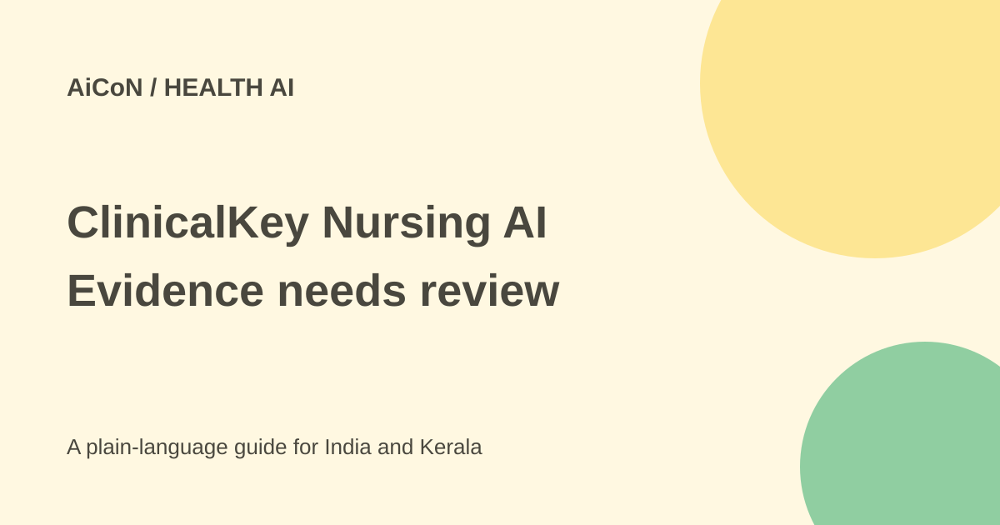

ClinicalKey Nursing AI: ask your hospital about access
ClinicalKey Nursing AI is Elsevier's nursing-focused clinical assistant. It supports professional judgment through cited information; it is not a consumer treatment chatbot or a replacement for local care protocols.

What is ClinicalKey Nursing AI?
Elsevier announced the global launch on 29 September 2026. The product lets nurses ask questions in ordinary language and receive answers grounded in nursing books, journals, clinical skills and guidelines. The product pages also use the name ClinicalKey for Nursing AI.
Examples include finding information about procedures, medication-related questions and discharge planning. This guide does not give treatment instructions. Clinical decisions must stay with qualified professionals using the patient's situation, their scope of practice and the institution's approved procedures.
Who can get access?
The public route is an institutional inquiry. Elsevier says access is being rolled out to customers this year. A global launch does not establish that every hospital already has the feature or that an individual nurse can create a free personal account.
The checked pages do not publish an India subscription price, a universal free tier or a confirmed open student trial. Ask your hospital librarian, nursing education team or authorised procurement contact whether its subscription includes the AI feature. Ordinary ClinicalKey for Nursing access should not be assumed to include every new AI capability.
For a Kerala hospital or college, the practical questions are local availability, licence scope, authorised users, authentication, training, renewal and support. No inquiry form, purchase or clinical account was submitted for this guide.
How to evaluate it safely
- Ask the institution whether the AI feature is licensed and approved for your role. Use the official access route it provides.
- Read the local policy on clinical AI and patient information. Begin with a general, non-identifying question.
- Open the citations behind the answer. Check source date, population, setting and whether the full text supports the conclusion.
- Compare the answer with the institution's current protocol, local formulary and professional scope.
- If sources conflict or the answer lacks needed context, consult the appropriate senior clinician rather than guessing.
- Report incorrect or unclear answers through the institution's review process. Evaluate both useful results and failures.
- Use the information as support, not an automatic instruction to change a patient's care.
What evidence does it use?
Elsevier lists nursing journals including the Journal of Emergency Nursing, AACN Advanced Critical Care, the American Journal of Infection Control and Geriatric Nursing. It also lists Clinical Skills and books such as emergency and critical-care references.
The product page describes direct links to full text and a web-based, mobile-responsive experience. Whether your institution can open all linked sources depends on the licence and access setup. An answer can look well sourced while a particular passage is outdated or does not apply to the patient in front of you.
Pilot numbers are not patient-outcome proof
Elsevier says over nine in ten registered nurses in its pilot felt more confident in clinical decisions and three quarters said it saved time during a shift. These are vendor-reported pilot perceptions. They do not prove a specific improvement in patient outcomes, error rates or performance at a different hospital.
A local evaluation should check relevance, factual errors, missing warnings, time spent checking citations and how often staff need to escalate. Faster answers are useful only when they remain appropriate to the task.
Privacy and India limits
The marketing page describes a design ready for protected health information and HIPAA-related workflows. That US-oriented statement is not an independent certification of your Indian deployment or permission to paste identifiable patient details into any account.
Before clinical use, the institution should confirm hosting, retention, model processing, access controls and the contractual data terms. The checked launch pages do not settle those details for a specific Indian hospital. Use a de-identified learning example while those questions remain open.
What changed since the original post?
The 30 September post introduced the nursing tool and pilot claims. This guide makes institutional access, current rollout uncertainty and source review more explicit. It separates confidence reported in a pilot from independently demonstrated clinical outcomes.
Frequently asked questions
Can any nurse sign up free?
The checked route is institutional inquiry, not a confirmed universal free personal account.
Can it replace clinical judgment?
No. Elsevier describes it as support for nursing judgment.
Is India pricing confirmed?
No. Ask the authorised institutional contact.
Was it tested with a patient?
No. This guide used public sources and contains no patient-specific advice.
Sources: Launch, content and pilot claims · Product and inquiry route · ClinicalKey nursing context. Checked 7 October 2026.